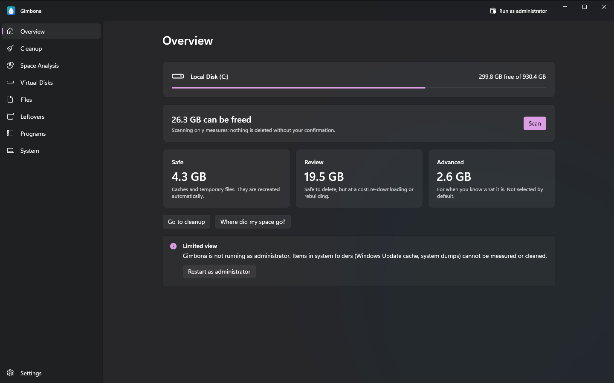
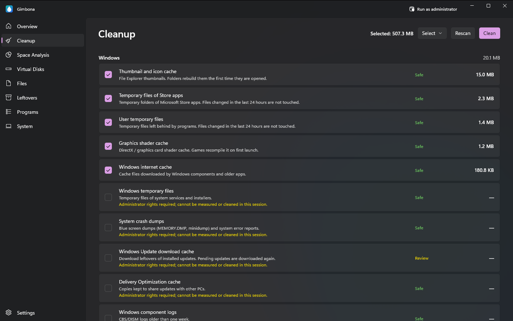
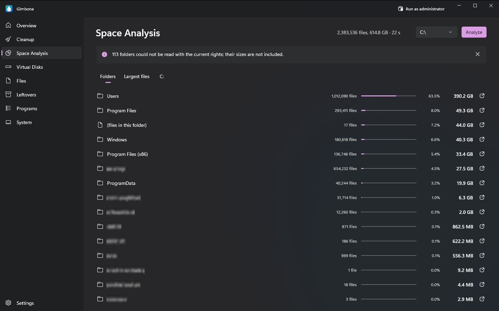
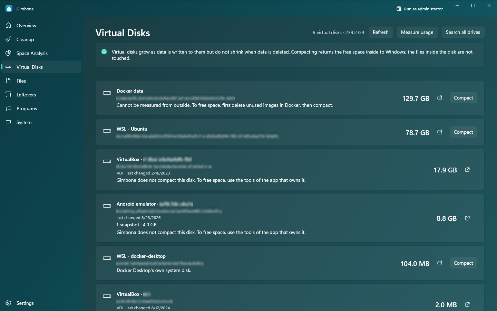

Disk cleanup for Windows: free up disk space safely
C drive full? Gimbona shows what is filling your drive and helps you clean it up: junk files, temporary files, caches, Windows Update leftovers, large and duplicate files, unused programs and virtual disks that only ever grow. Scanning only measures; nothing is deleted until you confirm.
Get Gimbona from the Microsoft StoreFree for Windows 10 and Windows 11. Gimbona Pro is an optional one-time purchase, no subscription.




Features
- Disk cleanup with a safety level for every item: Safe, Review, Advanced
- Scanning only measures; nothing is deleted without your confirmation
- Junk file, temp file and cache cleaner for Windows, browsers and apps
- Disk space analyzer by folder, with the largest files
- Large and old file finder
- Duplicate file finder
- Leftovers of uninstalled programs
- Installed programs by size and last run
- Bulk uninstaller for unused programs (Pro)
- Compact WSL, Docker and Hyper-V virtual disks (Pro)
- Developer and game cache cleanup (Pro)
- Automatic weekly or monthly cleanup (Pro)
- Windows component store (WinSxS) and hibernation file cleanup (Pro)
- No data collection; everything stays on your PC
- English, German, Spanish, French and Turkish
- Dark, light and turquoise themes
What Gimbona cleans
Junk file, temp file and cache cleaner
Gimbona finds Windows temporary files, crash dumps, thumbnail and shader caches and Windows Update leftovers, and the caches of browsers (Chrome, Edge, Firefox, Brave, Opera) and apps such as VS Code, Discord, Slack and Spotify. Every item shows how much space it takes and carries a safety level: Safe, Review or Advanced.
Disk space analyzer, large file finder and duplicate file finder
See which folders and files take up your drive, largest first. Search your personal folders for large and old files and for duplicate files, and look for folders that uninstalled programs left behind. Searching only lists; what you select is moved to the Recycle Bin, where you can restore it.
Shrink WSL, Docker and Hyper-V disks (VHDX)
Virtual disks grow as data is written to them but do not shrink when data is deleted. Gimbona lists the disks of WSL, Docker Desktop, Hyper-V, VirtualBox, VMware and Android emulators with their sizes, and Gimbona Pro compacts ext4.vhdx and other dynamic VHDX and VHD files to return the free space inside them to Windows. The files inside the disk are not touched.
Uninstall programs you no longer use
See your installed programs by size and remove them. When Gimbona runs as administrator it also shows which programs have not been run for 3, 6 or 12 months. Removing one program at a time is free; Gimbona Pro removes several in one go. Drivers, runtimes and security software are not listed, so they cannot be removed by mistake.
Safe by design
After a scan only the Safe items are selected; Advanced items are never selected by default. Gimbona checks the health of your disk first: if Windows reports that the drive needs repair, cleaning is paused. It does not collect your data or send it anywhere.
Questions and answers
My C drive is full. What can I delete safely?
Start with the items Gimbona marks as Safe: temporary files, caches, crash dumps and Windows Update leftovers. Windows and your apps rebuild them when needed. The scan shows how much each item would free before anything is deleted.
Is it safe to delete temporary files and caches?
Yes for the items marked Safe; apps recreate them, at most a first start is a little slower. Items marked Review are also safe to delete, but something will have to be downloaded or built again. Items marked Advanced are for people who know what they are.
Why is my WSL or Docker disk (ext4.vhdx) still huge after I deleted files?
A VHDX file grows when data is written but does not shrink when data is deleted. Compacting the disk returns that free space to Windows. Gimbona shows how much a WSL disk can give back, and Gimbona Pro compacts it; WSL is shut down while this runs, and Gimbona tells you before it starts.
Does Gimbona delete anything on its own?
No. Scanning only measures, and cleaning starts only when you confirm. Automatic cleanup is an optional Pro setting that is off by default and cleans only Safe items.
Is Gimbona free?
Yes. Disk analysis and the cleanup of Windows, browser and app files are free. Gimbona Pro adds virtual disk compaction, developer and game caches, bulk removal and automatic cleanup for a one-time payment, with no subscription.
Does Gimbona send my data anywhere?
No. Scanning and cleaning happen only on your PC. Gimbona has no analytics, telemetry or advertising.